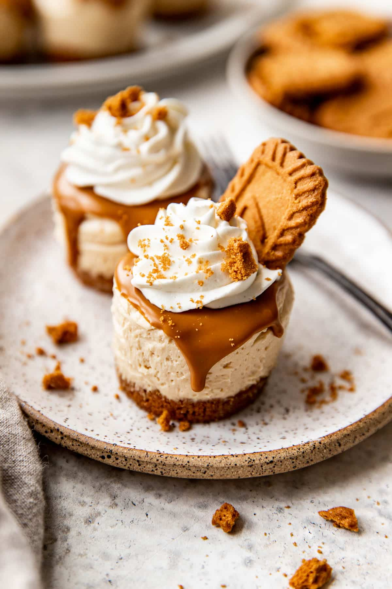

Biscoff Cheesecake

Ingredients
- 250g Biscoff biscuits
- 100g melted butter
- 500g cream cheese
- 100g powdered sugar
- 1 tsp vanilla extract
- 300ml heavy cream
- 150g Biscoff spread
- Extra Biscoff biscuits for topping
Instructions
- Crush Biscoff biscuits and mix with melted butter. Press into a cake tin and refrigerate.
- Beat cream cheese, powdered sugar, and vanilla extract until smooth.
- Whip heavy cream separately, then fold into the cream cheese mixture.
- Spread the mixture over the biscuit base and refrigerate for at least 4 hours.
- Warm the Biscoff spread slightly and drizzle over the cheesecake.
- Decorate with extra crushed biscuits and serve chilled.